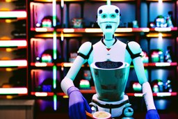
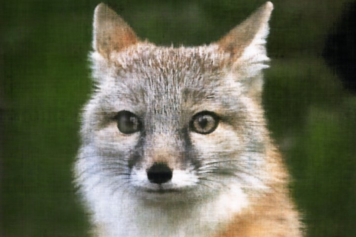
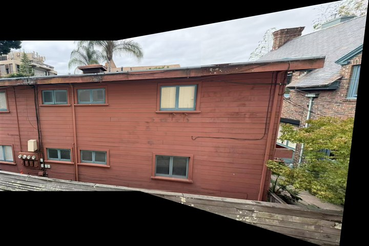
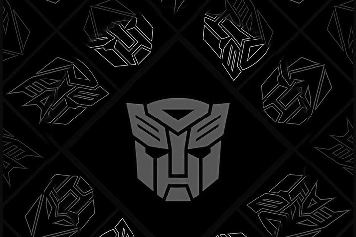
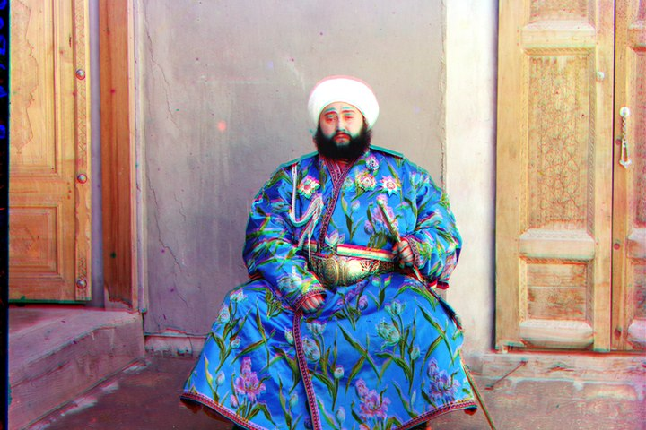
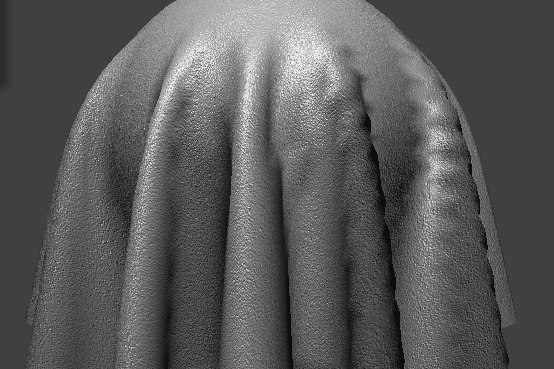
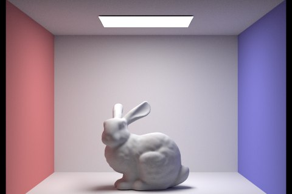
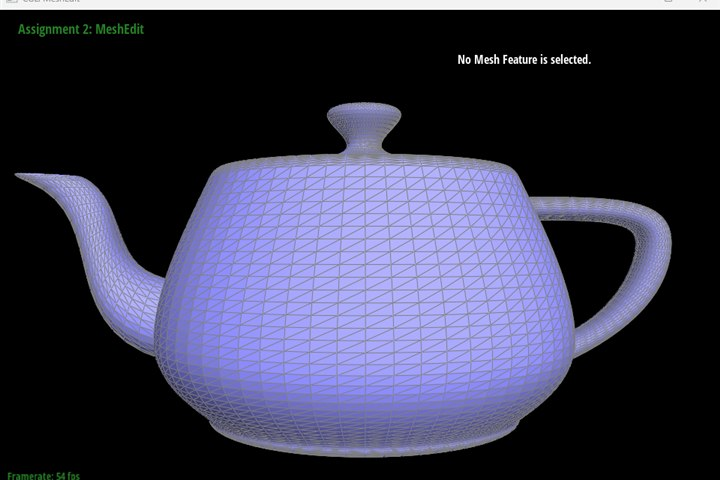
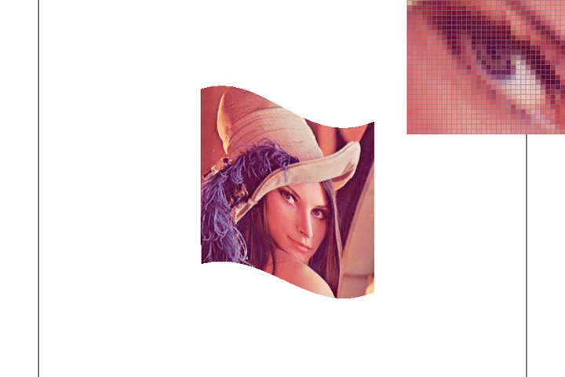

Hi, I'm PinkFloid. I like building visual things from first principles — aligning century-old glass-plate photographs, stitching panoramas, fitting neural radiance fields, sampling diffusion models, and writing a rasterizer, a path tracer and a cloth simulator from scratch. Nine projects are documented below.

Denoising and sampling loops with DeepFloyd — CFG, inpainting, visual anagrams and hybrid images — plus a DDPM UNet trained from scratch on MNIST.

Fitting a neural field to a single image, then a full NeRF — ray sampling, volume rendering and novel-view synthesis on a multi-view scene.

Homography estimation and image warping, then fully automatic panorama stitching with Harris corners, ANMS, feature matching and RANSAC.

2D convolution from scratch, edge extraction, unsharp masking, hybrid images, and seamless multi-resolution blending with Laplacian pyramids.

Colorizing Prokudin-Gorskii glass-plate negatives by aligning the three channel exposures with coarse-to-fine image pyramids and edge-based matching.

A mass-spring cloth simulator with Verlet integration, self-collision and object collision, shaded with GLSL: diffuse, Blinn-Phong, texture, bump and mirror.

Physically-based rendering from scratch: ray-scene intersection, BVH acceleration, direct and global illumination, and adaptive sampling.

De Casteljau evaluation for curves and surfaces, plus a half-edge mesh editor with edge flips, edge splits and Loop subdivision.

A software rasterizer: triangle rasterization with supersampling, transforms, barycentric interpolation, and texture mapping with mip-mapping.